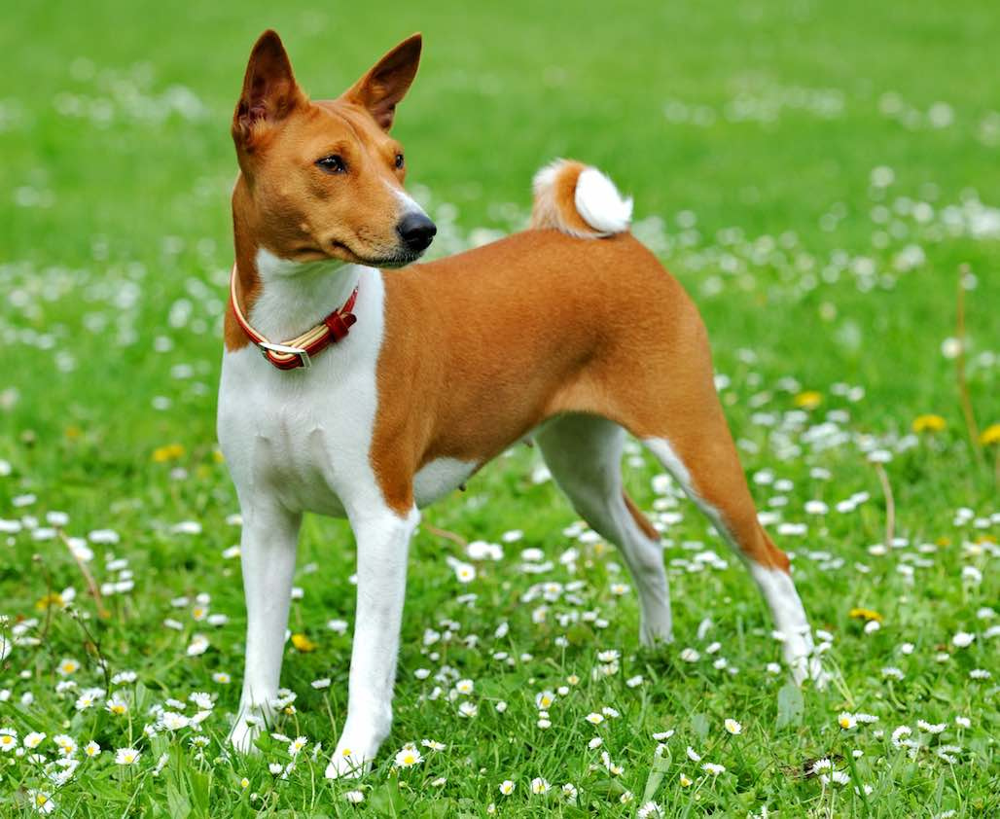
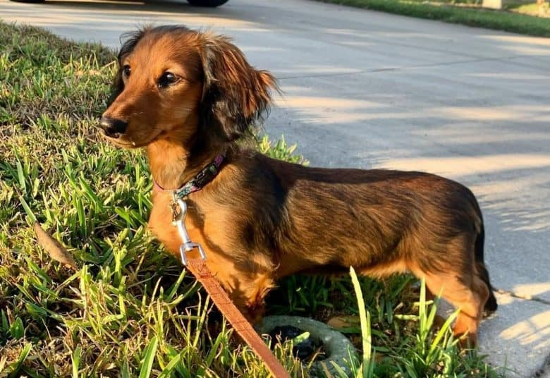
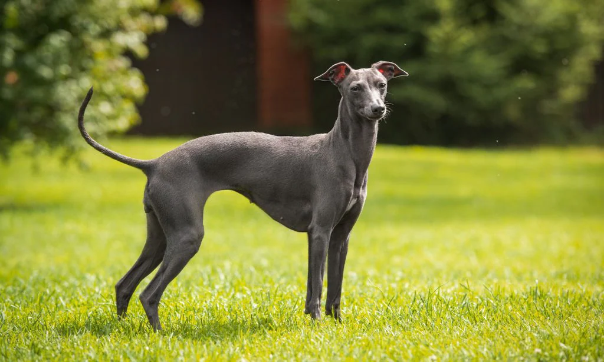

Dogs For You
Are you looking to adopt a new dog, but you don't know which breed would be the best for you?
Well this page will recommend some dogs for new owner and more experinced owners.
Firstly, lets start with some dogs for a new pet owner, that are easier to take care of.
Starting out at number one is the Basenji.

Basenji are great family pets, and like being around people. They are small in size, weighting around 22-24 pound, and have very short fur so they don't shead very much.
These dogs are a bit energetic, but because of their small size, only one hour of exercise is recommendeda day.
Basenji are a barkless dog, but have a very distinct yodel instead.
Another great dog is the Dachshund.

Dachshund are small dogs with their distinct short legs and long body. Although this dogs are small they are very smart and joyful. They are
often very cursious and have the tnedency the bark at almost anything that picks thier intrest. Dachshunds are moderate shedders, but are great family pets.
They are also hypoallergenic so they are less likely to cause allergic reactions.
Alternatively, Greyhounds are another great, easy to take care of dogs.

Greyhound are very gentle, effectinate, playful, and noble dogs. These dogs are one of the fastest breeds in the world, so they enjoy outings but need
little outright exercise time. There short, smooth coats mean they shed very little, needing only the occasinal brush. Greyhounds are naturally well-mannered
but that doesn't mean training comes naturlly too.
I made this page not only to give people information about some dog breeds, but to emphasize the importance of research and preperation before getting a dog.
Dogs are living beings and need almost as much attention as a human. So please don't get a dog if you are not capable to provide for their needs. But if you
have done your reseach and are ready for a new dog here are some links to adoption centers that have plenty of dogs and other animals that need a home.
PAWS
Seattle Humane